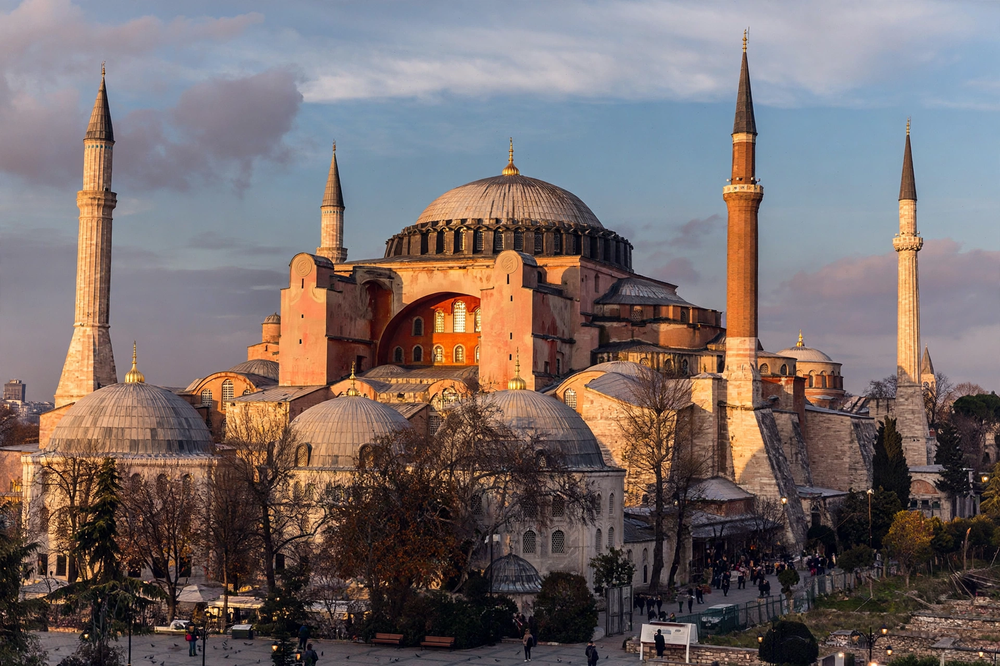

Byzantine Empire
| Capital | Constantinople |
|---|---|
| Languages | Greek (earlier also Latin) |
| Founded | 330 (dedication of Constantinople) |
| Dissolved | 1453 (fall of Constantinople) |

[Image: Hagia Sophia in Istanbul — the great sixth-century dome with later Ottoman minarets around it]The Byzantine Empire, also referred to as the Eastern Roman Empire, was the continuation of the Roman Empire in its eastern provinces during late antiquity and the Middle Ages, when its capital was Constantinople (modern Istanbul). It survived the fragmentation and fall of the Western Roman Empire in the fifth century AD and continued until the fall of Constantinople in 1453 — a span of more than a thousand years.
Its inhabitants called themselves Romans (Rhomaioi) and their state Romania; 'Byzantine', from Byzantium, the old name of its capital, is a later historians' label. Greek gradually replaced Latin as the language of government and culture.
History
The empire's survival owed much to Constantinople's formidable walls and strategic position between Europe and Asia. Under Justinian I (r. 527–565), generals such as Belisarius temporarily reconquered parts of Italy, North Africa and Spain, while jurists compiled the Corpus Juris Civilis and architects raised the great domed church of Hagia Sophia.
The seventh century brought catastrophe: wars with Persia and then the Arab conquests stripped away Syria, Egypt and North Africa. Reduced but resilient, the empire endured further centuries of conflict with Arabs, Bulgars, Normans and Turks, enjoyed a Macedonian-dynasty revival (867–1056), and was fatally weakened by the Crusader sack of Constantinople in 1204.
Fall and legacy
Restored in 1261 but shrunken to little more than its capital and fragments of Greece, the empire ended on 29 May 1453, when the Ottoman sultan Mehmed II captured Constantinople after a celebrated siege; the last emperor, Constantine XI, died in the fighting.
Byzantium preserved Roman law and Greek learning, transmitted classical texts to both the Islamic world and Renaissance Europe, created the Cyrillic alphabet through its missionaries to the Slavs, and shaped Orthodox Christianity, art and architecture across Eastern Europe and the Balkans.